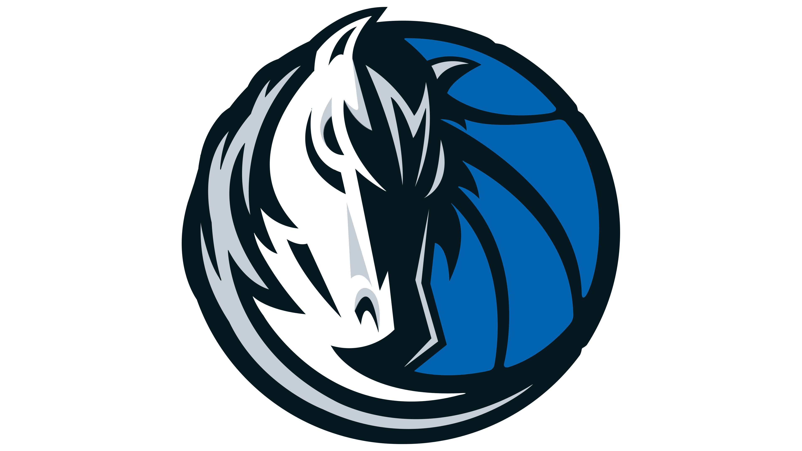

Un Shai de récord: 54 puntos
La estrella de OKC superó su career-high para ganar a Utah en un partido más complicado de lo esperado.
Josep Falagán
La estrella de OKC superó su career-high para ganar a Utah en un partido más complicado de lo esperado.
Josep Falagán
El flamante fichaje del verano pudo, por fin, debutar con su nuevo equipo y devolver tamaño a una pintura de OKC falta de altura. Impacto inmediato que se tradujo en victoria.
Josep Falagán
| Equipos | 1Q | 2Q | 3Q | 4Q | FINAL |
|---|---|---|---|---|---|

|
34 | 28 | 21 | 32 | 115 |
|  | 33 | 27 | 31 | 30 | 121 |